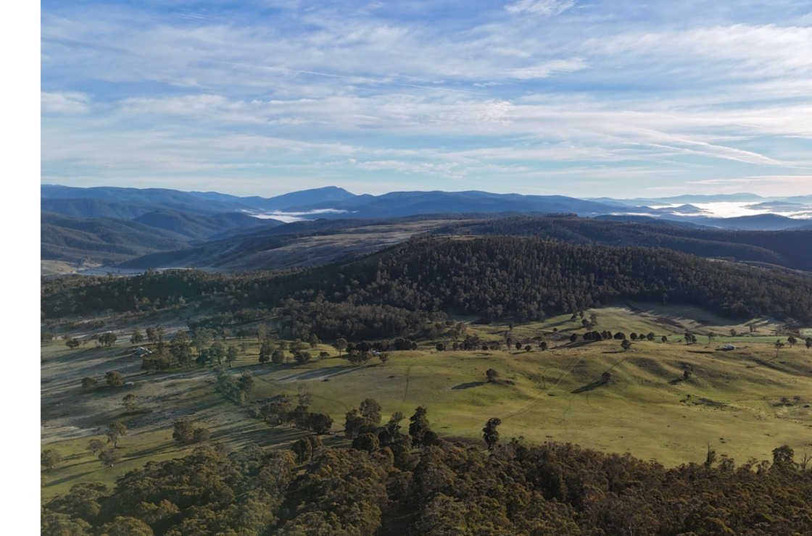

Four Peaks Pastoral · Australia-wide
Aerial application, mapping and land management
Australia-wide operations for pastoral, agricultural and environmental work — based in Omeo, Victorian High Country.
- On ground
- 24+ years
- Coverage
- Australia-wide
- Ownership
- Family-owned

We fly the work, return the record, and leave you with data you can use — maps, treatment logs, imagery and verification files tied to the country we covered.
Four Peaks Pastoral is a family-owned Australian business combining more than 24 years of practical farming and agronomy with precision aerial capability. We operate nationally from a High Country base.
How the work runs
Survey. Treat. Verify.
Most people come to us to spray country a ground rig can’t reach, to map a property before a carbon project, or to prove work was done.
Survey & measure
-
01
Aerial mapping & surveying
RTK survey-grade imagery and geospatial data for planning and monitoring.
Orthomosaic · DSM/DTM · GIS package
-
02
LiDAR & terrain intelligence
Three-dimensional terrain and vegetation structure through canopy.
Point cloud · Contours · Canopy metrics
-
03
Agricultural intelligence
Crop and pasture insights from aerial imagery for seasonal decisions.
NDVI · Change layers · Season report
-
04
Thermal wildlife & animal surveys
Locate livestock, pest animals and wildlife with minimal disturbance.
Thermal mosaic · Count notes · Waypoints
Treat & apply
-
05
Precision aerial application
Herbicides, fertilisers, seed and products applied safely across all terrain.
Flight logs · Treatment map · Product record
-
06
Environmental & carbon project support
Integrated support across restoration, revegetation and carbon lifecycles.
Site prep · Monitoring · Progress imagery
Flagship program
Carbon Grazing Australia™
A method for integrating livestock into environmental planting and carbon project work — with aerial mapping and verification built into the process.
The program sets grazing timing, stocking and rest against planting and monitoring milestones. Four Peaks supplies the aerial record: baseline maps, progress imagery and verification files that sit alongside the grazing plan.

From the ground
What clients say
Short quotes from landholders and project partners — added when you have them.
“[Client testimonial placeholder — replace with a short quote about the work, the handover, or how the aerial record was used on country.]”
Client-supplied · Add at handover
Who you’ll deal with
A named person on the job

Name to be confirmed
Principal · Omeo, Victorian High Country
Built on more than 24 years of practical farming, agronomy and livestock management. Four Peaks combines that ground experience with aerial crews operating Australia-wide.
Phone and email placeholders — final details to follow.
Get in touchReady to talk through your country or program?
Phone · Details to follow · Email · Details to follow